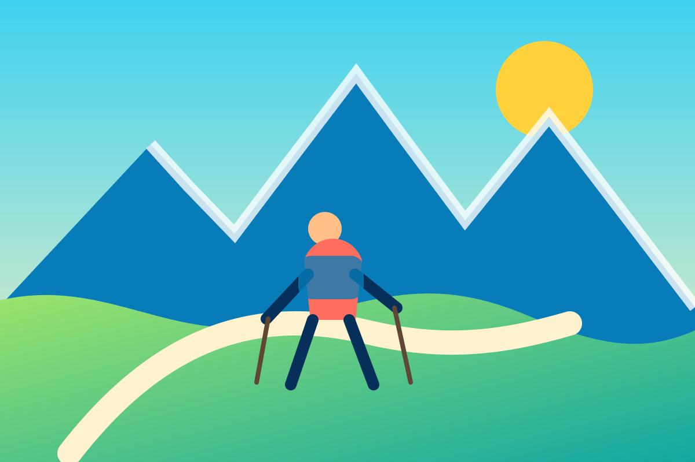

Observer sans déranger
Comprendre les habitudes des animaux et adopter une attitude discrète.
Nature et découverte
Accompagnatrice en montagne de La Giettaz, elle propose des découvertes de la faune, de la flore et du ciel étoilé.

Accompagnatrice locale
Sandrine Coulaud est accompagnatrice en montagne, peintre sur bois et monitrice de ski. Elle met l’accent sur la nature, la vie animale, les plantes et l’astronomie.
Comprendre les habitudes des animaux et adopter une attitude discrète.
Une découverte du ciel qui associe petite marche et initiation à l’astronomie.
Choisir un rythme, un thème et un niveau adaptés au groupe.
Sandrine Coulaud
977 route de la Gardette
73590 La Giettaz
06 83 33 58 73
sandrinecoulaud73@gmail.com